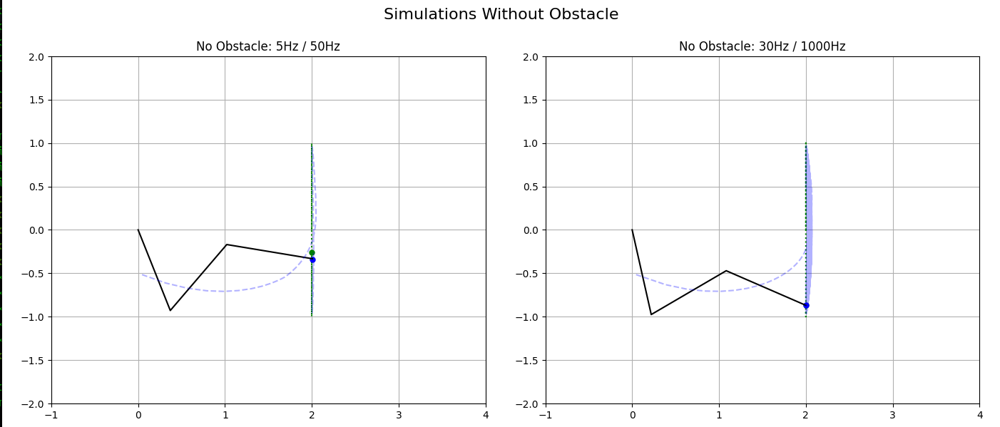
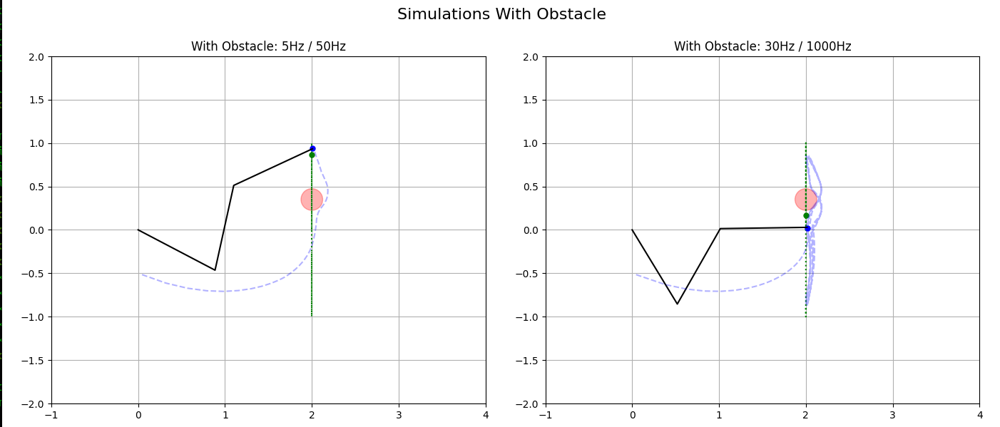

A 3-DOF planar arm tracks a moving target using closed-form inverse kinematics and PID joint control, and avoids an obstacle with a repulsive force field.
Sowmiya Jeromiah · Robotics Software Engineer


_obstacle_repulsion() keeps a safe zone of twice the obstacle radius. Targets inside it are pushed out to the boundary, and the push gets stronger the closer they are.
The brief says to track using only the target's position. IK maps a Cartesian position directly to joint angles.
Jumping to each IK solution looks clumsy. PID on the joints gives smooth motion and shrinking error.
Task A: 30 Hz target. Task B: 5 Hz target with a 50 Hz control loop.
At the brief's position (L, 0.5L) the obstacle never touched the arm's path, so I moved it to (2.0, 0.35), r = 0.125, and documented why.
_ik_rrr_all() returns all the closed-form configurations instead of just one. Switching between them would look clumsy, so PID on the joints keeps the motion smooth.
P reacts to the current error, I removes steady-state offset, D damps how fast the error changes.
They're reactive and can get stuck in local minima. A planner such as RRT, or MoveIt for 3D arms, is the robust alternative.
docker compose --profile sim up --build, or --profile sim-obstacle. No local installs.